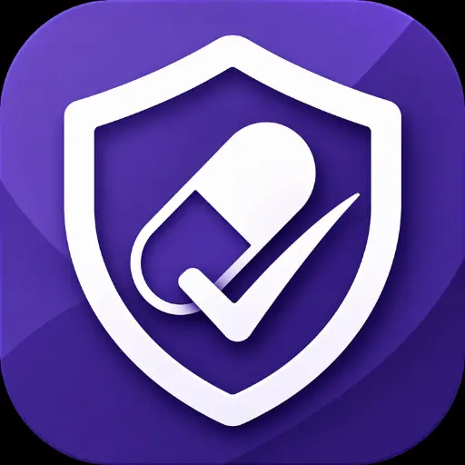
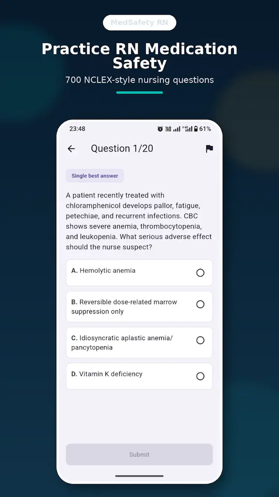
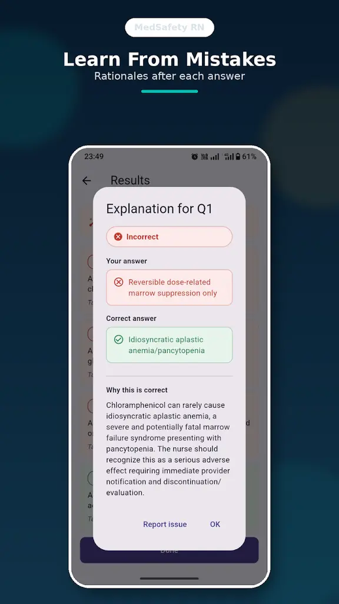
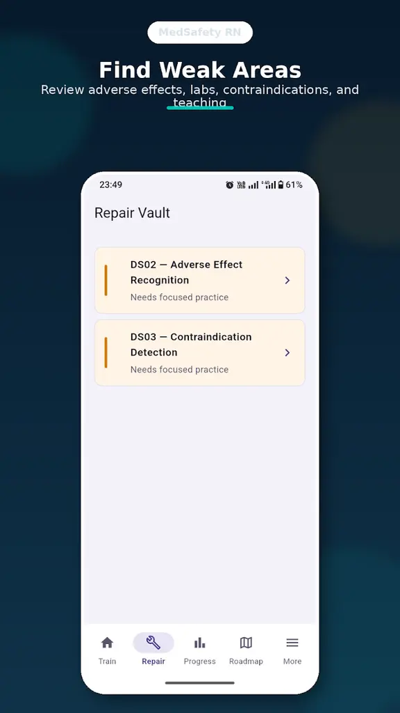
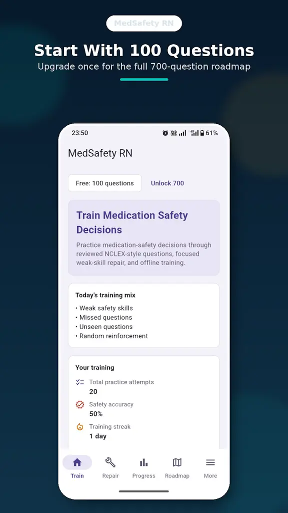
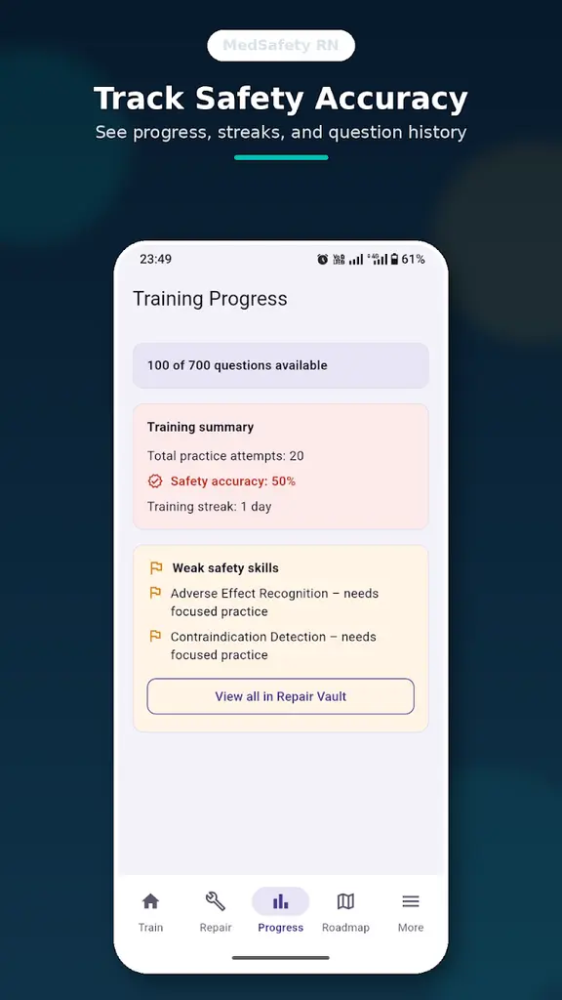
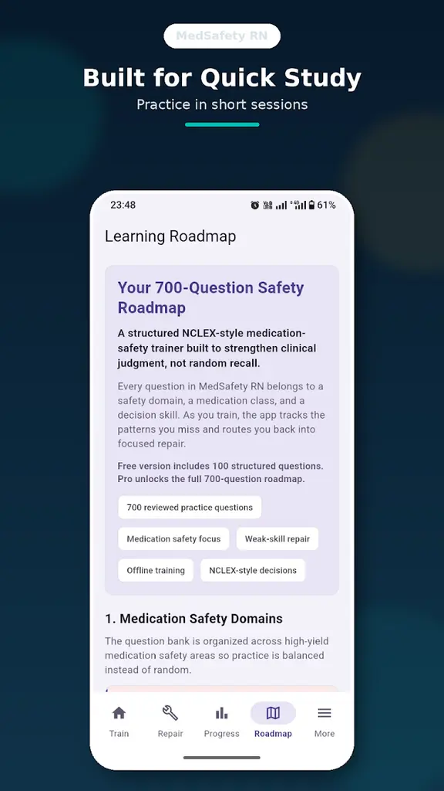
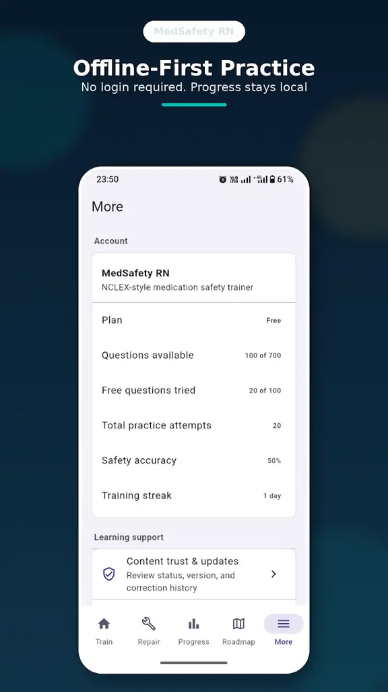
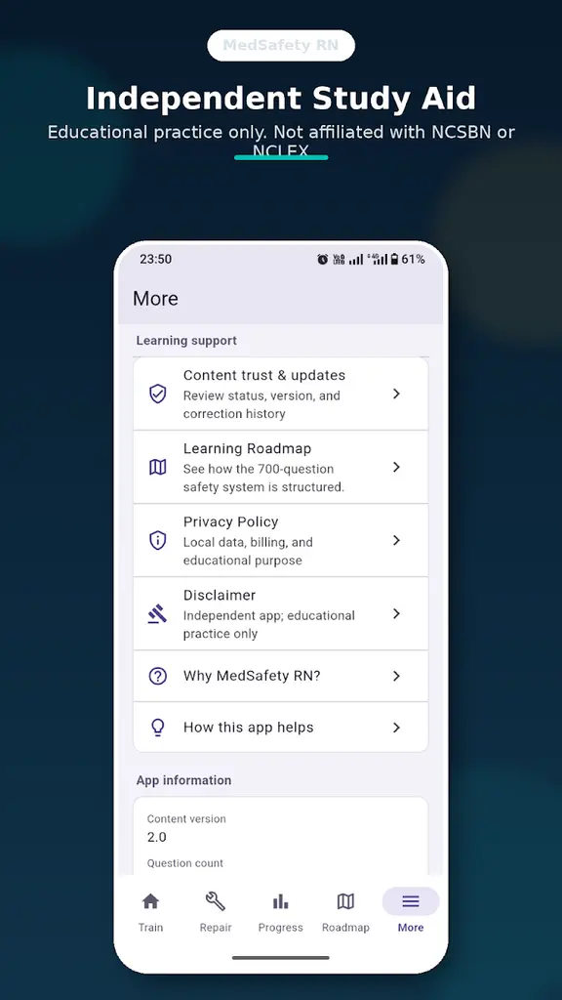

Answer a focused question
Work through a medication-safety scenario and choose the nursing decision you believe is safest or most appropriate.

MedSafety RN Get it on Google PlayFocused NCLEX-style questions for nursing learners covering medication administration, adverse effects, contraindications, monitoring and patient teaching.



Why focused practice
Broad nursing question banks move across many subjects. MedSafety RN deliberately stays narrow: repeated practice in the medication-safety decisions that nursing learners are expected to recognise and reason through.
Each question asks you to choose, question, monitor or teach—not simply recall a drug name. That makes the app a focused practice companion, not a complete nursing course or substitute for trusted clinical references.
How it works
Short sessions keep the loop clear enough to repeat whenever you have time.
Work through a medication-safety scenario and choose the nursing decision you believe is safest or most appropriate.
See why the correct option fits and why the competing choices do not address the key risk or priority.
Return to recurring mistake patterns such as adverse-effect recognition, contraindications, monitoring or patient teaching.
Features and screenshots
Medication-safety scenarios built around nursing judgement and priority decisions.
Explanations appear after questions so mistakes become usable study moments.
Repeated error patterns point you back to decision skills needing more practice.
See practice attempts, question history and completed activity on your device.
Track your accuracy across focused medication-safety practice sessions.
Keep a simple record of recent study consistency without public competition.
Questions and local progress remain available after installation without an account.





Swipe or scroll to explore all eight real app screens.
Topics covered
Questions move across medications and situations while returning to the safety patterns nursing learners need to recognise.
Free versus Pro
The Android app is free to download. Regional Google Play pricing may vary for the optional Pro unlock.
Included
Use the core training loop before deciding whether you need the full roadmap.
One-time unlock
Continue into the complete question roadmap and full weak-area practice.
Privacy-first learning
MedSafety RN does not require an account and does not use advertising, analytics, tracking SDKs, Firebase or a developer-operated cloud backend. Questions, preferences and progress are stored locally.
Clearing app data or uninstalling the app may remove locally stored progress. Eligible Pro purchases can be restored through Google Play using the same Google account.
Read the privacy policyFrequently asked questions
No. It is an independent educational practice app and is not affiliated with, endorsed by or approved by NCSBN, NCLEX, Pearson VUE, nursing boards or licensing authorities.
It is designed for nursing students, NCLEX-RN learners, repeat test takers, international nurses reviewing U.S.-style questions and pharmacology learners seeking focused medication-safety practice.
The free version includes 100 medication-safety questions. The complete roadmap contains 700 reviewed questions.
Pro unlocks the full 700-question roadmap and full weak-area practice through an optional Google Play purchase.
No. Pro is a one-time purchase. There is no recurring subscription, although regional pricing may vary.
Questions and local progress work offline after installation. Google Play and internet access are still required for installation, updates, purchase and restoration.
Progress is stored locally on your Android device. The app has no developer-operated cloud synchronization, so clearing app data or uninstalling may remove it.